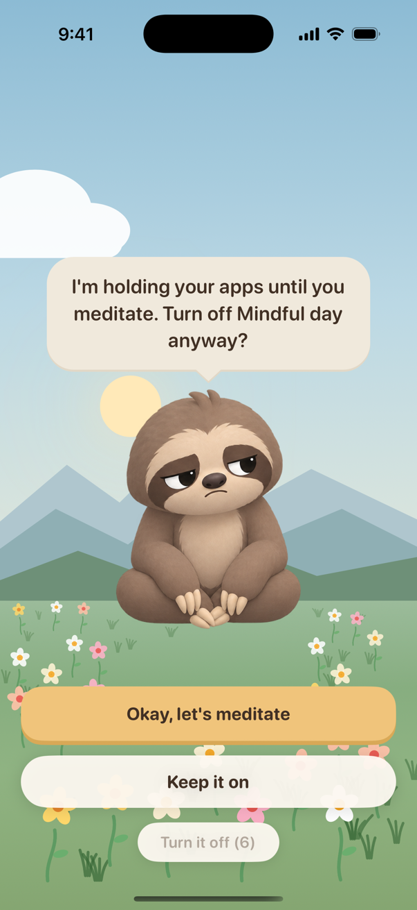
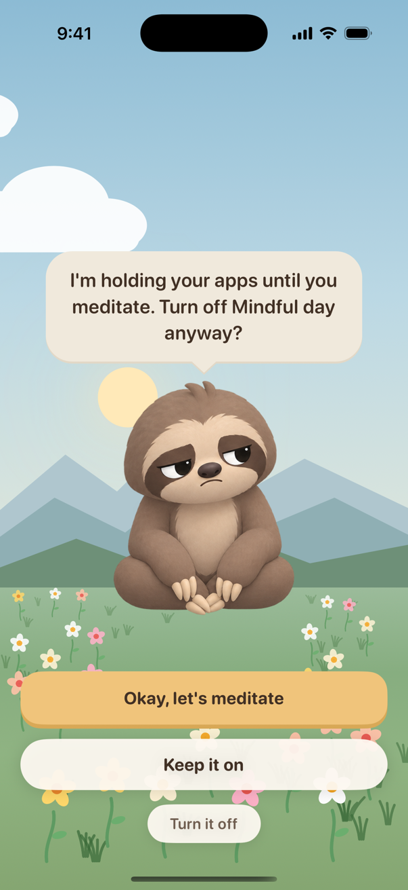
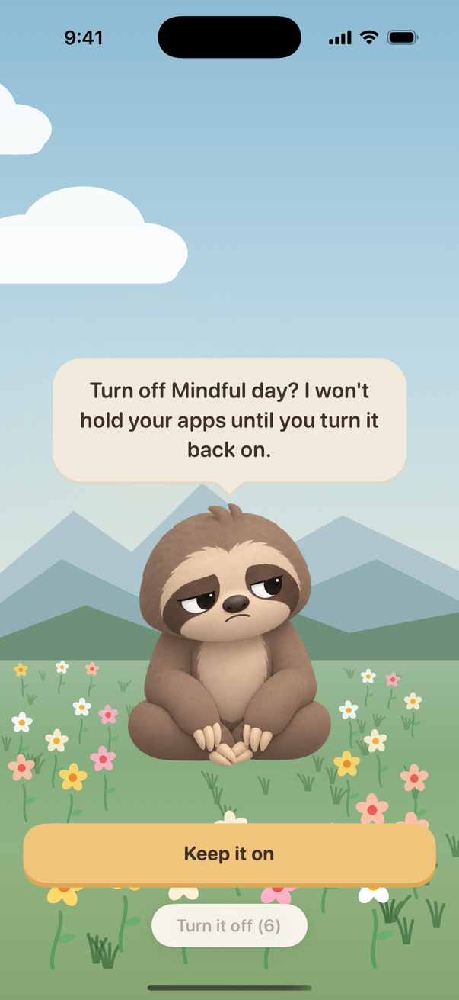
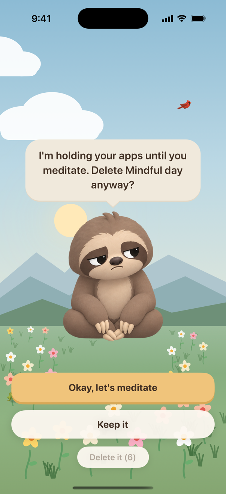
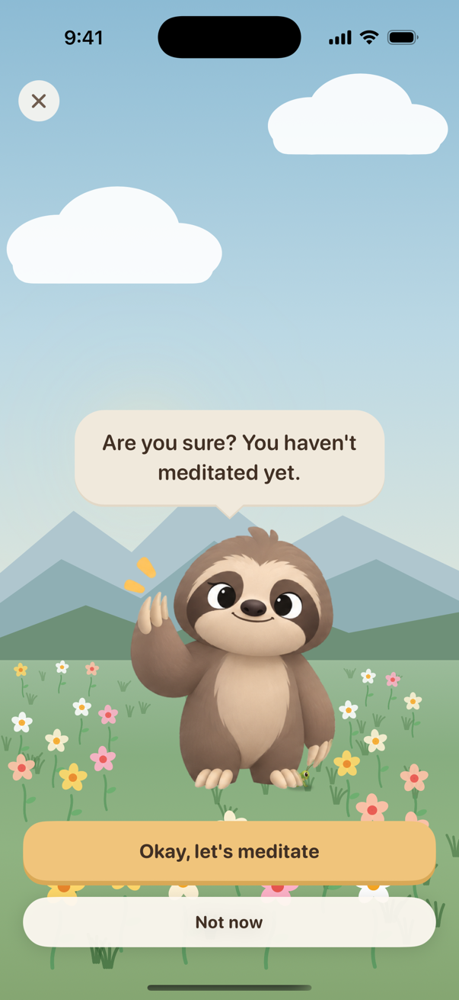
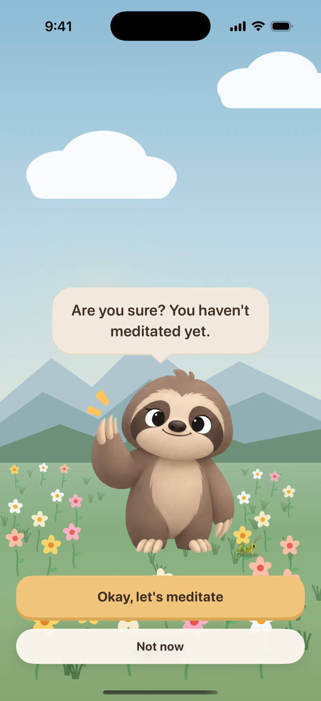

Making it harder to switch Otto off
Today someone can tap the X on Otto's screen, open Block and flip the switch off in two taps. These are rendered from the app on an iPhone 17 Pro.
1. Turning a blocker off asks first Recommended
Switching a blocker off, or deleting it, opens Otto's screen first. "Turn it off" waits ten seconds before it can be tapped, counting down on the button. If the blocker is holding apps right now, meditating is the first choice offered.




2. Otto's screens lose the X
With no X, someone who lands on Otto's screen has to answer him. "Okay, let's meditate" opens the + screen, which can still be closed. "Not now" goes to how long, which opens the apps for 5, 10 or 30 minutes (and costs glow if the window then passes with no session).


To decide
- Remove the X? Recommended yes. Even so, the confirmation screen is what actually closes the gap: without the X there are still ways into the Block tab.
- Ten seconds? Long enough to change your mind, short enough to be fine for someone genuinely editing their schedule.
- Ask even when it isn't holding anything right now? Recommended yes, so turning it off at night before tomorrow isn't the easy way around it.
- Still open: editing. Someone could open a blocker and remove its apps or shrink its hours instead of switching it off. Should a change that would open apps right now get the same screen?